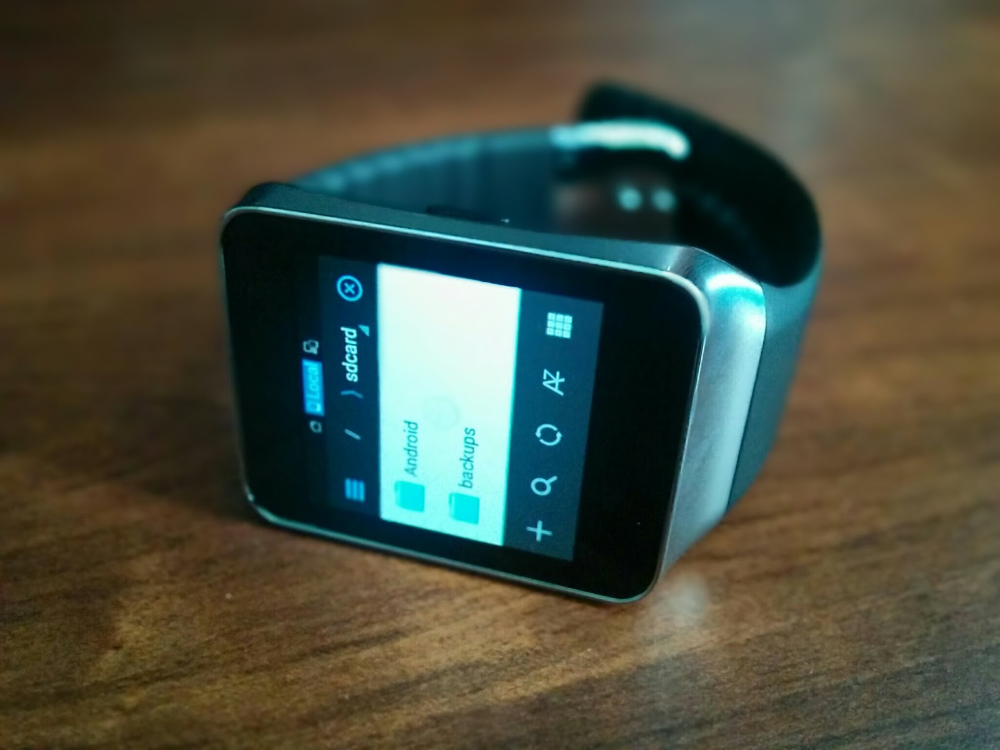

So now that you can install Android apps on your watch, what now? Well there’s tons of applications and games that work to some degree on Android Wear, but usually problems related to the OS make them hard to use. In this post, I’ll be going over a few tricks that will make using Android apps on Android Wear much easier.

One of the ways Android Wear conserves battery is turning off the screen after it’s been on for about 10 seconds. While this is just fine and dandy for watch stuff (you probably won’t be staring at the time for more than that), it’s a problem using Android applications.
Fortunately after trying a few apps, I found one that worked. Keep Screen On Free is a very basic application that allows you to switch between auto turn-off, keeping the screen on until you manually shut it off, or even turn the screen off after a timer. You can download the APK here. To install the application, follow my guide here (you only have to do the ‘Installing applications’ section if you’ve done this before) but use the Keep Screen On Free APK instead of the one in the guide. Now open it with an app launcher like Wear Mini Launcher or tap the screen at the watchface, scroll to Start, and find the app.
Another issue with Android applications on Android Wear is that they sometimes rotate the screen. While this is normally helpful on phones/tablets, it makes the app impossible to use while wearing your watch. Fortunately there’s another app that can fix this, called Set Orientation. I’ve mirrored an APK of it here for easy installation to your watch. To install the application, follow my guide here (you only have to do the ‘Installing applications’ section if you’ve done this before) but use the Keep Screen On Free APK instead of the one in the guide.
Once installed, find it in the app menu by tapping the watchface, scrolling down to “Start”, and tapping Set Orientation. You can also say “okay google, open set orientation” too, or install Wear Mini Launcher for easy access. Tap the menu, tap the Portrait option, and press OK. If you get a notification about the orientation, just swipe to the left on it until you reach “Mute” option and press it.
Now all applications will stay in portrait mode on your watch, including Android apps. This is especially useful for games that rotate the screen. And the best part is that you don’t need to open the app again to change it!
Some Android applications require you to place files in a certain folder (emulators, for instance). Fortunately it’s pretty easy to copy files from your computer to your watch. First, make sure your watch is connected to your computer via ADB. If you’ve followed my previous guide or any of the ones above, you’re good. Otherwise, read my older guide here for setting up your watch with ADB. Check to make sure your watch shows up with the ‘adb devices’ command, like this:
03107f69d0218bba device
localhost:6666 device
The ‘localhost’ device is your watch. Let’s try pushing a picture from your computer to your watch. Find any picture, type ‘adb -e push’, then a space, then drag in the picture into the command line/terminal window. After that type ‘/sdcard/’. You should have something like this:
adb -e push C:\PICTURE.JPG /sdcard/The first part (C:\PICTURE.JPG) is the location of the file stored on your computer. The second part (/sdcard/) is the sdcard folder on the watch. While no Android Wear devices have SD card storage, it still inherited the name of that folder from Android. Think of it like your computers’ My Documents folder, it’s where applications store data. Press ENTER on the command and see if it works. If it does, the picture can now be found at /sdcard/PICTURE.JPG on the watch.
But chances are you will probably need to do more than just copy files. What about retrieving them? It’s just the other way around, using the pull command:
adb -e pull /sdcard/PICTURE.JPG C:\This will pull the file ‘PICTURE.JPG’ to the C: drive of your computer. If you use Mac or Linux, just replace “C:\” with “~/”. But chances are you will need to do more than push/pull files. Here is a handy guide for managing files under Linux, which just so happens to work on Android Wear too. Just remember to put ‘adb -e shell’ before all the commands.